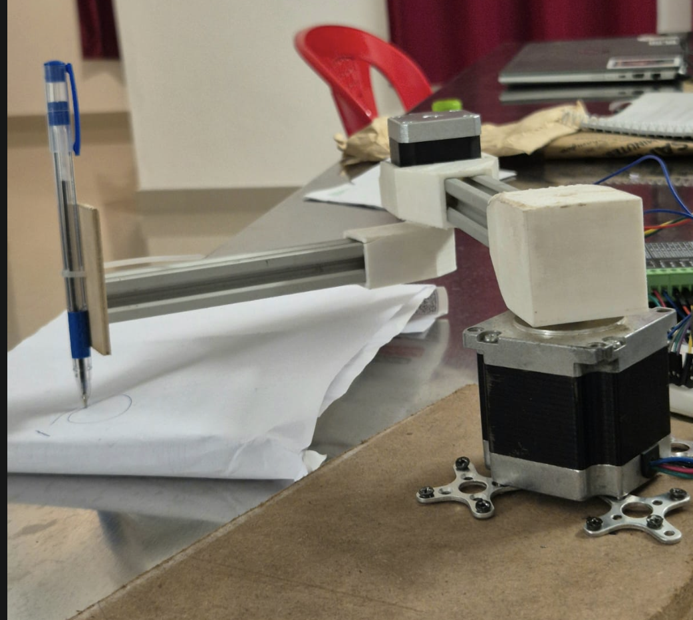
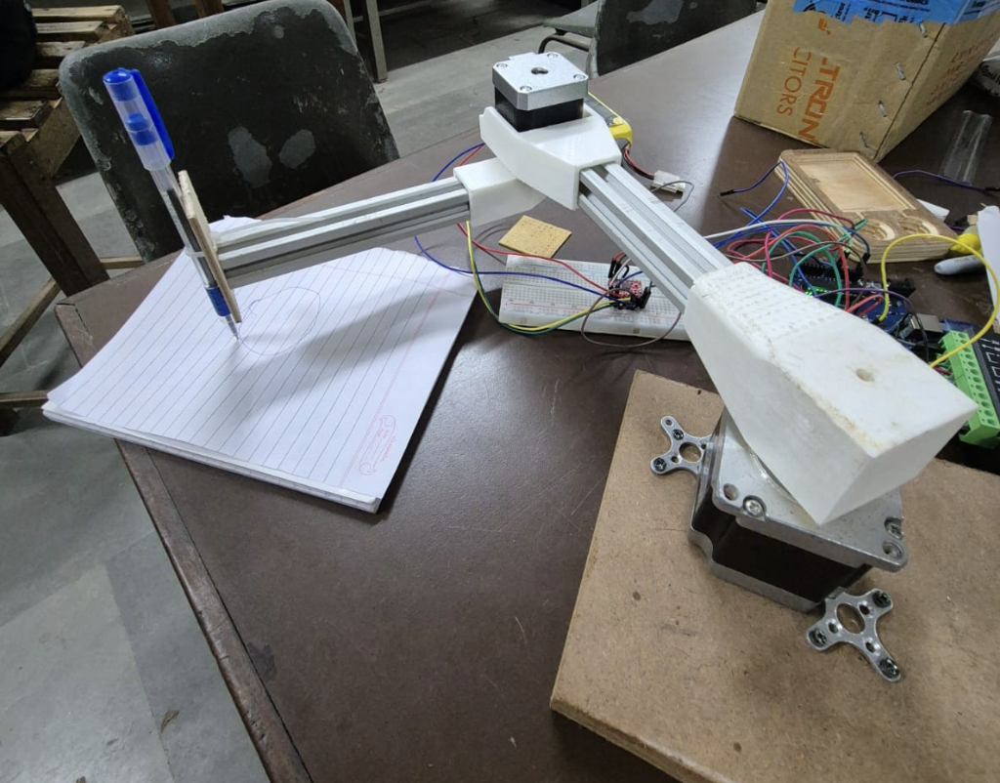
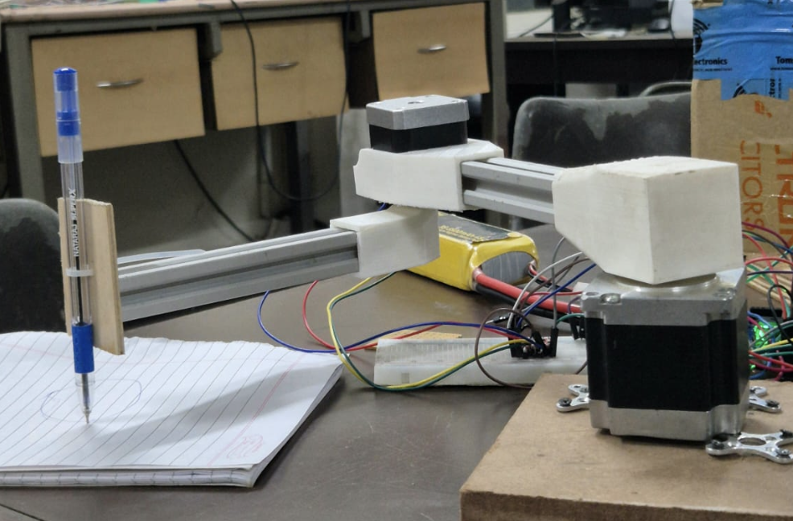
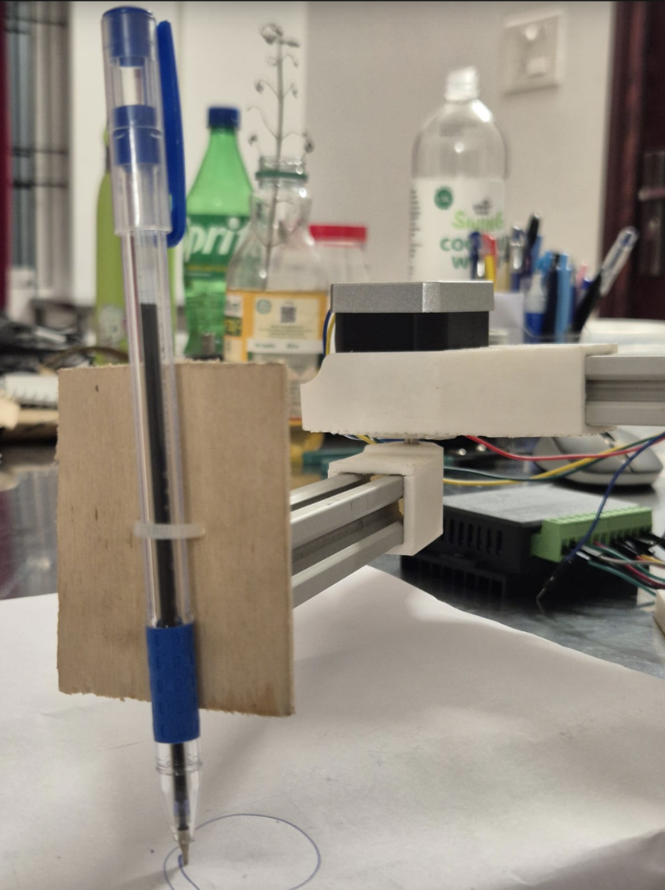

Robotics · Embedded Systems · Human-Machine Interaction
Gesture-Controlled Robotic Arm
Project Overview
A gesture-controlled robotic arm designed to replicate human hand movements through real-time gesture recognition. The system uses computer vision to interpret hand gestures and translates them into corresponding motor movements, enabling contactless control of a robotic arm.
Objectives
- Develop a robotic arm controlled through hand gestures.
- Implement real-time hand tracking and gesture recognition.
- Convert detected gestures into motor control signals.
- Establish communication between the vision system and the robotic hardware.
Technologies & Components
Software
Hardware
Work Done
Designed and developed a working prototype by integrating servo motors, Arduino and computer vision. Created CAD models in Fusion 360 and validated mechanical movement through iterative testing.
Project Gallery



